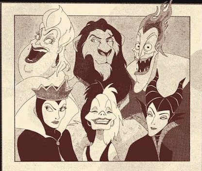

Het masker af
"Hun verhaal, hun woorden"
Iedereen kent ze: de slechteriken uit je favoriete films. Maar hoe goed ken je écht hun verhaal? Achter elk duister plan, elke kwaadaardige lach, schuilt een waarheid die zelden wordt verteld.
In Het Masker Af nodigen we hen uit om te spreken. Wie ze zijn, wat hen dreef – en wat ze nooit eerder durfden te delen. We duiken diep in de psyche van deze schurken, ontrafelen hun trauma's en ontdekken de emotionele lagen achter hun keuzes. Met scherpe inzichten, meeslepende gesprekken en een blik die de grenzen tussen goed en kwaad vervaagt, onthullen we wat nooit eerder werd gezien.
Want soms is het masker niet alleen wat hen beschermt... maar ook wat ons misleidt.
In deze podcast nemen host Simon Cowell en bekende psycholoog John Watson je elke week mee in de meeslepende verhalen van onze schurk van de week. Ze geloven dat elk verhaal twee kanten heeft en willen jou, als luisteraar, de volledige waarheid laten ontdekken. Hoewel ze de daden niet goedpraten, werpen ze wel een nieuw licht op de drijfveren en de mens achter het masker.
Kom meer te weten over ons.
Het Masker Af verschijnt elke donderdag om 18.00 op je favoriete podcastapp
Mis geen enkele aflevering en ontdek een wereld waar slechteriken hun ware gezicht laten zien.
Luister nu op:
Alvast benieuwd?
Nog niet zeker of deze podcast wat voor jou is? Of kan je niet wachten om onze podcast te luisteren en wil je alvast een voorproefje?
Bekijk hier onze trailer.
Het Masker Af - Het Raadspel
Ben jij klaar om de grootste film-slechteriken te ontmaskeren? Speel Het Masker Af met vrienden of familie en ontdek wie zich achter de raadselachtige vragen verstopt. Dit spannende vraag- en antwoordspel daagt je uit om iconische schurken te herkennen aan hun psychologische dilemma's en keuzes.
Na elke gok duiken we samen dieper in de psyche van de schurk: Wat dreef deze persoon tot zijn daden? Wat zegt dit over ons als mensen? Elke kaart bevat ook een discussievraag om met elkaar te bespreken. Dit is niet alleen een spel, maar ook een kans om samen na te denken over de complexe keuzes die mensen – zelfs slechteriken – maken.
Wie weet, misschien leer je niet alleen de schurken beter kennen, maar ontdek je ook verrassende inzichten over jezelf en je vrienden!